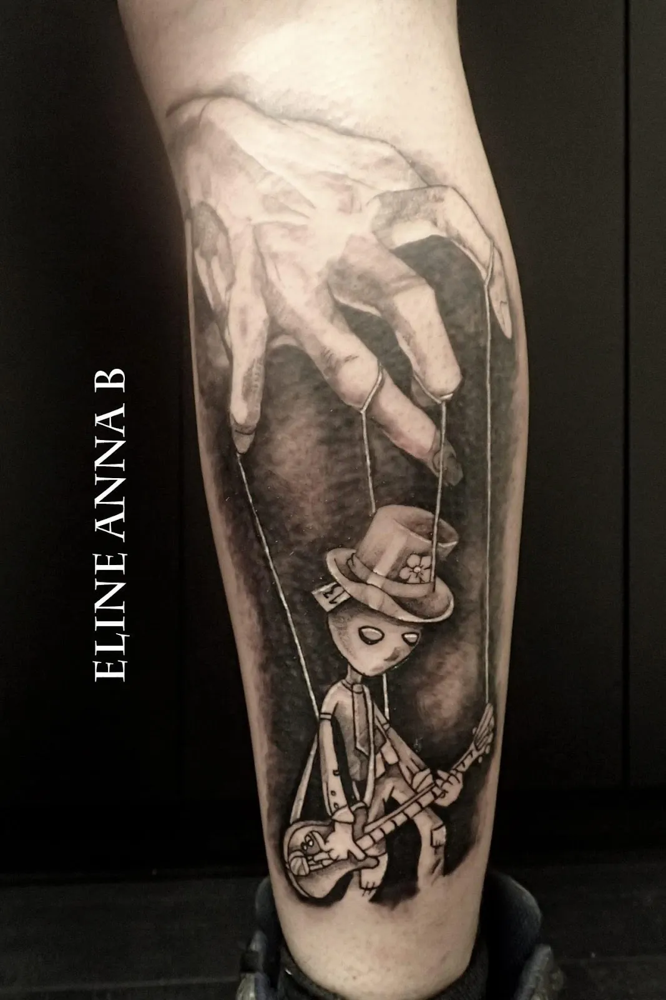
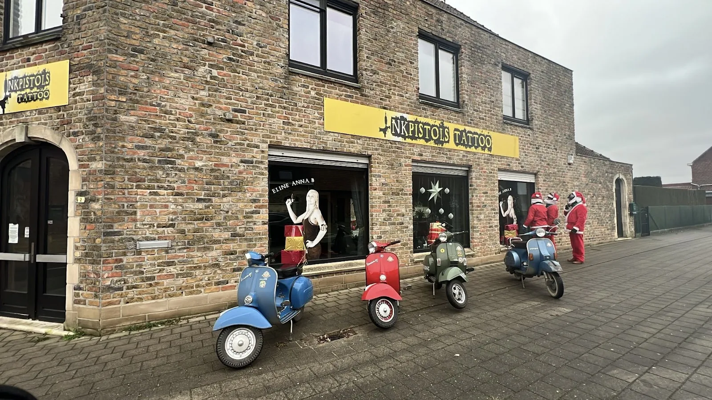
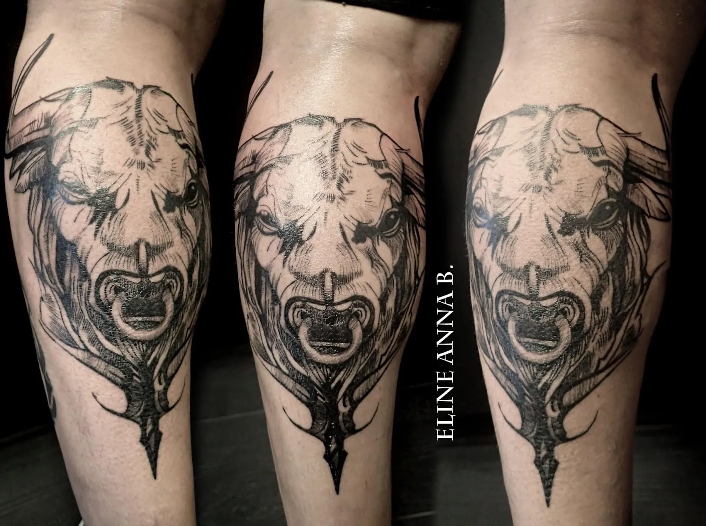
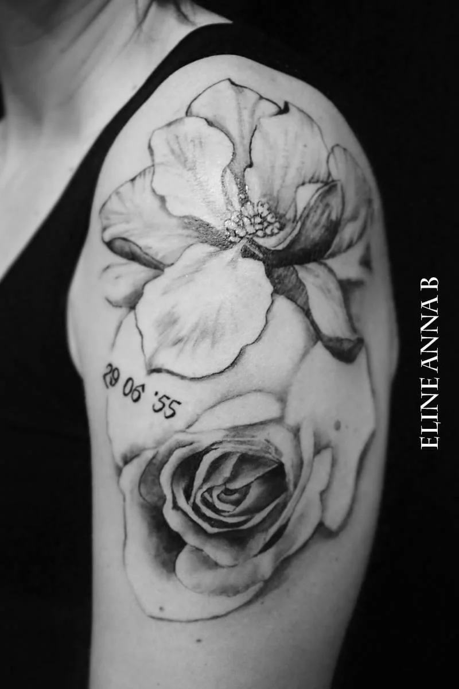
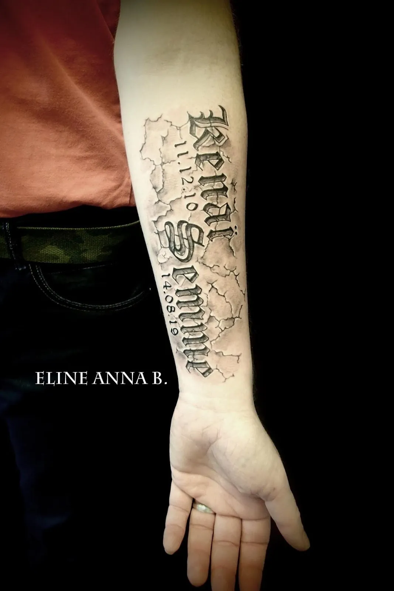
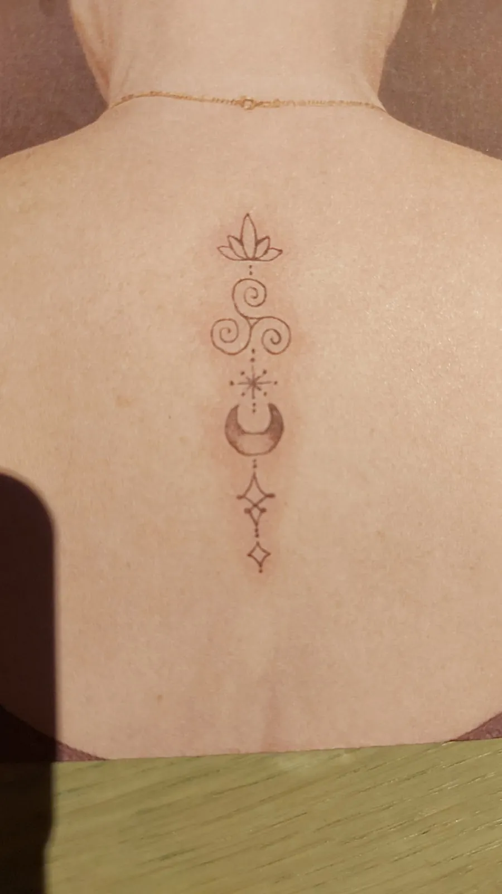

Black & grey
Realistische stukken met diepte en zachte overgangen, van portret tot dier.
Realistische black & grey, sierlijke letters of een fijn lijntje dat je elke dag wil zien. Je komt binnen met een idee, je gaat buiten met een tattoo waar je trots op bent.
Persoonlijke aanpak, van eerste schets tot nazorg

Achter Ink Pistols zit Eline. Haar portfolio staat vol zwart en grijs: zachte schaduwen, diepte en gezichten die je echt aankijken. Een paar woorden in mooie letters of een fijn lijntje zet ze met dezelfde zorg.
Je wordt hier vriendelijk ontvangen en neemt rustig de tijd. Eerst praten, dan tekenen, en pas zetten als jij helemaal zeker bent.

Twijfel je nog over de stijl? Vertel gewoon wat je mooi vindt, de rest zoeken we samen uit.
Realistische stukken met diepte en zachte overgangen, van portret tot dier.
Een naam, een datum of een zin die je bijblijft, in een letter die bij jou past.
Rozen en bloemen in black & grey, als los stuk of mooi verweven met een datum.
Kleine, sierlijke tattoos voor wie het subtiel houdt. Ideaal als eerste tattoo!
Vraag het aan ElineEen paar stukken uit de studio. Elk ontwerp krijgt dezelfde aandacht, groot of klein.




Op Facebook deelt Eline geregeld nieuw werk.
Letterlijk overgenomen van Google. Geen woord aan veranderd.
"Zet zeer mooi en fijn ! Een krak in haar vak ! Zeer perfectionistisch , ik ben zeer tevreden!"
"Persoonlijke aanpak, vriendelijke dame. Levert mooi werk."
"Eline is een hele toffe en super getalenteerde dame!"
Stuur een berichtje met je idee en een foto van de plek, of bel even. Tijdens het zetten kan Eline niet altijd opnemen, een berichtje lukt dus vaak het snelst.
Geluveldplaats 2, 8980 Zonnebeke
Toon de route
Ik maakte deze demo voor u om te tonen wat er kan. Na een kort gesprek maak ik er iets veel persoonlijkers van, helemaal naar uw wens.
Vrijblijvend. Ik kom langs of we bellen.
Op maat, op uw eigen domein.
Geen voorschot. U betaalt pas als alles klaar is.
Hosting, domeinnaam en kleine wijzigingen, zoals nieuwe openingsuren.
Omdat een voorbeeld meer zegt dan een mail. Zo ziet u meteen wat er kan, en het kost u niets.
Nee. Het gesprek is vrijblijvend. Vindt u het niks, dan is het daarmee gedaan.
Na ons gesprek staat uw site binnen 10 tot 14 dagen online.
Zeker. Uw domeinnaam kan gewoon blijven, de nieuwe site komt in de plaats van de oude.
Nee, dat doe ik op basis van ons gesprek. Eigen foto's zijn mooi meegenomen, maar niet nodig om te starten.